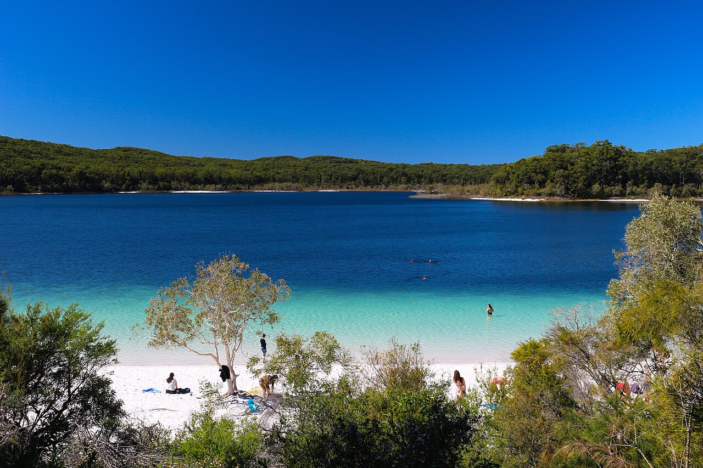

K’gari from Hervey Bay · 5-day family itinerary
One night in Hervey Bay, then the passenger ferry to three nights inside the Kingfisher Bay Resort dingo fence. One guided 4WD day to Lake McKenzie, the Central Station rainforest, Eli Creek and the Maheno wreck, a spare day in case the tour moves, and one rule for a nine-year-old and a six-year-old outside the fence: arm’s reach.

Photo: Lucas·G, Australia, Queensland, Fraser Island, Lake McKenzie, CC BY-SA 4.0, via Wikimedia Commons.

Checked before you commit
This illustrative route flies into Hervey Bay Airport, stays one night in Hervey Bay and three nights at Kingfisher Bay Resort on K’gari, and takes one guided 4WD tour. Queensland Parks pages and park alerts for K’gari, Kingfisher Bay Resort and Island Connections pages, and Fraser Coast Regional Council pages on the airport, WetSide and Urangan Pier were read on 30 October 2026. Nothing was booked.
No self-drive on sand. The family walks on to the ferry at River Heads, and a guide drives the 4WD day. Day 3 is the only tour day, and Day 4 is kept loose so the tour can move. The flight days stay on the mainland side of the strait.
Boardwalks of 400 m to 700 m on the tour day, a short pier walk on Day 1 and resort activities inside the fence. Each day has a morning and an afternoon slot. The children are nine and six, so every walk outside the fence is an arm’s-reach walk.
Ferry times, the tour’s times and listed prices were read on 30 October 2026, and are not a quote. We didn’t check rooms, rates or availability. A booking-hub link is intent only. It doesn’t hold a room, a ferry seat or a tour place.
Planning boundary: dates are illustrative; the worked example runs Saturday 21 to Wednesday 25 November 2026, inside the 1 September to 30 November 2026 wongari (dingo) rearing and emergence season and after the 1 November start of the Marine Stingers Warning, both listed on the Queensland Parks alerts page (rearing season, stingers warning, which applies from 1 November 2026 to 31 May 2027).
Queensland Parks says there are no patrolled swimming areas on K’gari, not to swim in the ocean, and that medical assistance on the island is limited. On 27 October 2026 it posted an alert (alert 27166) that a dingo was likely to be inside the Kingfisher Bay Resort and Village fenced area. The alert applies from 27 October to 2 November 2026, so it may have lapsed by the time you read this; check the Queensland Parks alerts page. Alfred doesn’t check park alerts, tides or tour times. Book opens a partner checkout; it doesn’t prove a booking.
Route and family-coordination brief
Party: two adults, one nine-year-old and one six-year-old, Australian residents. Base: one night in Hervey Bay, three nights at Kingfisher Bay Resort. Pace: moderate, a morning and an afternoon slot. Budget input: Mid Range.
Getting there: Fraser Coast Regional Council lists direct flights from Hervey Bay Airport to Brisbane, Sydney and Melbourne, and says the airport is about 10 minutes by car from the Esplanade. Kingfisher Bay Resort says River Heads, where its ferry leaves, is a 15-minute transfer from the airport. Queensland Parks says K’gari is 15 km off the coast of Hervey Bay and about 300 km north of Brisbane.
Dingo rule: Queensland Parks says to always stay within arm’s reach of children, even small teenagers, to walk in groups and carry a stick, and not to run. The resort says it sits within a dingo fence, and asks guests to be dingo-safe when they leave it. Report any dingo encounter to a ranger, on (07) 4127 9150, or by email to dingo.ranger@detsi.qld.gov.au.
Water rule: Parks says there are no patrolled swimming areas on K’gari, not to swim in the ocean because of rips and sharks, and not to dive. From 1 November 2026 to 31 May 2027 a Parks warning says swimming is not recommended in the waters off K’gari, Hervey Bay and the Great Sandy Strait because of marine stingers. The lake and creek swims on Day 3 are with the tour.
Left out: self-drive. Queensland Parks says only high-clearance 4WD vehicles suit K’gari’s sandy tracks and beaches, every vehicle outside the Kingfisher Bay Resort boundary needs a vehicle access permit, and the best beach driving is two hours either side of low tide. The Kingfisher Bay circuit (23.2 km, allow 9 hours, Grade 4, an overnight walk) is too long for this age group.
Day 1 — Fly to Hervey Bay, WetSide on the foreshore, a walk on Urangan Pier
Fly into Hervey Bay Airport (HVB). Fraser Coast Regional Council lists direct flights from Brisbane, Sydney and Melbourne, and says the airport is about 10 minutes by car from the Esplanade. It lists car rental, taxi, rideshare and shuttle buses; car rental desks are staffed only for arrivals, so book ahead. We didn’t check flight times or fares.
Check in to a Hervey Bay base for one night; we didn’t check rooms or rates.
In the afternoon, go to WetSide Water Park on the foreshore at Main Street and the Esplanade. Entry is free and the slides cost A$8 for 10 rides, as listed on 30 October 2026. Riders must be 1.2 m tall, Aqua Ninja is recommended for ages 8 and up and 140 cm, and children under 12 must be supervised by someone over 16.
Before dinner, walk out on Urangan Pier. The council said in July 2025 that the 868-metre pier had reopened after coastal protection works.
Fallback: the council says that from 6 October to mid-November WetSide opens on weekends only, with the main water play arena and TotSide closed for works. If the arena hasn’t reopened, the slides and Aqua Ninja are the plan; check both children’s heights against the rules first.
Live-check: WetSide’s hours and whether the main arena has reopened; the pier’s status; your flight time.
Day 2 — River Heads, the ferry to Kingfisher Bay, an afternoon inside the fence
Get to Kingfisher Bay Resort’s Mainland Reception at 54 Ariadne Street, River Heads, which the resort says is open 8:00am to 4:00pm daily. It asks guests to arrive 40 minutes before the ferry. We didn’t check taxi fares or times from Hervey Bay to River Heads.
Take the 1:00pm ferry, one of three designated services for resort guests from River Heads (9:00am, 1:00pm and 3:45pm). The resort gives about 50 minutes for the crossing, and says passenger ferry transfers are booked by calling its Reservations team. It listed walk-on fares of A$85 return per adult and A$48 per child on 30 October 2026.
The resort says it sits within a dingo fence and has four lagoon-style pools. Spend the afternoon there. Island Connections says crossing times may change during extreme low tides.
Start the dingo rule now. Queensland Parks says to stay within arm’s reach of children, even small teenagers, to walk in groups and carry a stick, and not to run. On 27 October 2026 it posted an alert (alert 27166) that a dingo was likely to be inside the Kingfisher Bay Resort and Village fenced area. It says QPWS is inspecting entry points, and asks visitors to close all gates securely, report fence or gate damage to dingo.ranger@detsi.qld.gov.au and report sightings on (07) 4127 9150. The alert applies from 27 October to 2 November 2026, so it may have lapsed by the time you read this; check the Queensland Parks alerts page.
Fallback: if the 1:00pm ferry is missed, the 3:45pm is the last designated guest service.
Live-check: the ferry booking; Parks alerts for K’gari, including whether the fenced-area dingo alert (applies 27 October to 2 November 2026) has been renewed or has lapsed.
Day 3 — Beauty Spots 4WD tour: Lake McKenzie, Central Station, Eli Creek and the Maheno
Kingfisher Bay Resort’s Beauty Spots 4WD Tour checks in with a ranger at the Sunset Bar at 9:00am for a 9:05 to 9:15am departure and returns about 4.45pm. It lists Lake McKenzie, Central Station and Wanggoolba Creek rainforest, 75 Mile Beach, the Maheno Shipwreck and Eli Creek, with morning tea, a buffet lunch, park fees and fuel levies. On 30 October 2026 the low-season family price (two adults, two children aged 4 to 17) was A$799.
At Boorangoora (Lake McKenzie), Queensland Parks says food or drinks other than water are not allowed at the lakeshore, because popular sites attract dingoes. It says the lake is busiest between 10.30am and 3pm, and a Parks alert says drones are prohibited there until 10 December 2026.
At Central Station, a Parks alert says a fallen tree has closed part of the Wanggoolba Creek boardwalk until 26 January 2027; it can still be walked from the western section as an out-and-back walk.
At Eli Creek, Parks describes a 400 m return boardwalk where you can float back to the beach with the creek. On 75 Mile Beach, Parks says not to swim in the ocean because there may be rips and sharks, and that there are no patrolled swimming areas on K’gari.
At the Maheno wreck, Parks says the beach is a pedestrian area with a strict 40 km/h limit, to keep children close, and that access is prohibited within 3 metres of the wreck. At every stop outside a fence, one adult per child, within arm’s reach.
Pack a towel and swimwear, as the resort asks. Bookings cancelled more than 24 hours before departure have no fee; within 24 hours, the fee is 100%.
Fallback: if the tour is cancelled or full, move it to Day 4 and ask Hey Alfred to swap Day 3 and Day 4; neither day has a flight.
Live-check: the tour booking and check-in time; Parks alerts for Lake McKenzie, Central Station and the Wanggoolba boardwalk.
Day 4 — A spare day: a ranger-guided paddle or a quiet day by the pools
Keep this day loose. If the tour moved, it runs today. If not, the resort lists a ranger-guided canoe paddle from the jetty through the Dundonga Creek mangroves at A$35 per adult; we didn’t see a child price, so ask Reservations.
For a walk outside the fence, the resort asks walkers to tell rangers or Reception their route and walk in groups of at least three. Two adults and two children make four, all within arm’s reach.
Swim in the resort pools. From 1 November 2026 to 31 May 2027, a Parks alert says marine stingers are in the waters off K’gari, Hervey Bay and the Great Sandy Strait, that swimming is not recommended, and that medical assistance on K’gari is limited.
The resort says Junior Eco Rangers, for ages 5 to 12, runs every Saturday, with more sessions in school holidays, so it isn’t in this weekday plan. Check the What’s On guide in case there is an extra session.
Live-check: the paddle booking; the stinger alert; the resort’s What’s On guide.
Day 5 — The morning ferry and the flight home
Take the 10:15am ferry from Kingfisher Bay to River Heads, one of the resort’s designated guest services (8:00am, 10:15am, 2:30pm and 5:00pm).
Kingfisher Bay Resort lists airport drop-off times of 9:30am, 12:00pm, 1:30pm and 4:00pm, at A$15 one-way per person. Ask Reservations which transfer connects with the 10:15am ferry and your flight.
Fallback: if the flight is late in the day, the resort also lists a 2:30pm ferry and a 4:00pm drop-off; ask whether they connect before you rely on them.
Live-check: your flight time; the ferry and transfer bookings.
Planning notes
Dates are illustrative. At decision time, recheck the Queensland Parks alerts page for K’gari, the ferry and tour times with the resort, WetSide’s hours, your flights and your rooms. A travelling profile is required, and the adults, children and ages Alfred plans for come from the travellers on that profile.
On web Lets Go, Holiday takes origin, destination, dates, a budget step and a day pace, then Plan my trip queues the itinerary. Moderate day pace fills a morning and an afternoon slot, with lunch and dinner. The Estimated costs bar, when it appears, is a rounded median of flight-and-hotel packages, not a quote.
While the trip is still Planning, you can keep or change the hotel and then the flights Alfred picked. Holiday takes one destination, so a Hervey Bay night and three island nights may need a hotel change while Planning. We did not test whether city search offers Hervey Bay or K’gari.
Once the trip is ACTIVE, you can edit an item’s title, times and notes, so “Beauty Spots tour; check in 9:00 at the Sunset Bar; no food at the lake shore; arm’s reach outside the fence” can sit on the card. In Hey Alfred you can ask to swap two full days, and you confirm before it is applied. A day with a flight can’t be moved that way. Book opens a partner checkout. It doesn’t check park alerts or ferry times.
Plan a trip
Start with your people, dates and pace, then review the editable plan before booking.
Plan a trip